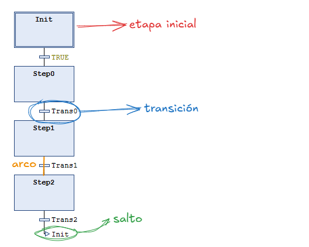

¿Qué es el SFC (Sequential Function Chart)?
El SFC (en español, Diagrama Funcional Secuencial, también conocido como Grafcet según la norma francesa que le dio origen) es un lenguaje gráfico diseñado específicamente para describir secuencias de operaciones. Es el lenguaje más natural cuando un proceso puede dividirse en estados discretos bien definidos con condiciones de cambio entre ellos.
¿Cuándo usar SFC?
Usa SFC cuando el proceso que deseas automatizar se puede describir como una sucesión ordenada de pasos. Ejemplos típicos:
- Ciclos de llenado/vaciado de depósitos.
- Líneas de montaje con fases diferenciadas.
- Secuencias de arranque/parada de máquinas.
- Control de semáforos o señales luminosas.
- Brazos robóticos con movimientos secuenciales.
💡Regla de oro: si puedes describir tu proceso con frases como "primero haz A, luego espera a que ocurra X, después haz B…", el SFC es tu lenguaje.
¿Cuándo NO usar SFC?
- Para lógica puramente combinacional (sin estados): usa FBD o ST.
- Para algoritmos de decisión complejos sin sentido de "estado de programa": usa ST.
- Evita usar el SFC como diagrama de decisión ramificado; esto genera diagramas complejos y con mal rendimiento.
ℹ️ La lógica combinacional y secuencial son los dos pilares del diseño digital. Los circuitos combinacionales generan salidas basadas únicamente en las entradas actuales, sin memoria (e.g., sumadores). En contraste, los circuitos secuenciales utilizan memoria (biestables) para que la salida dependa de las entradas actuales y estados anteriores, con retroalimentación (e.g., contadores).
Elementos fundamentales del SFC
Un programa SFC está compuesto por cuatro tipos de elementos gráficos básicos:
Etapa (Step)
Representa un estado estable del sistema. En cada instante, una o varias etapas están activas.
┌─────────┐
│ Etapa │ ← Nombre de la etapa (e.g., motorOFF)
└─────────┘
- Cada etapa tiene un nombre único.
- La etapa inicial se representa con doble borde y es la que está activa al arrancar el programa.
- Una etapa puede tener acciones asociadas que se ejecutan mientras dicha etapa está activa.

Transición (Transition)
Representa la condición de cambio entre dos etapas. Es una expresión booleana; cuando se evalúa como TRUE y la etapa anterior está activa, el flujo avanza a la siguiente etapa.
────┤ condición ├────
- La condición puede ser una variable booleana, una expresión lógica o simplemente
TRUE(avance inmediato). - Se programa en ST, LD o FBD.
Arco dirigido (Arc / Link)
Línea vertical u horizontal que conecta etapas con transiciones, indicando la dirección del flujo.
Salto (Jump)
Permite crear bucles o saltar a una etapa no adyacente sin dibujar un arco largo. Se representa como una flecha con el nombre de la etapa destino. Es muy usado para reiniciar el ciclo volviendo a la etapa inicial.
↓
┌───────┐
│ Init │ ← salto de vuelta al inicio
└───────┘